Tutorial SPE — Sistema de Personal para Eventos
Uso paso a paso con capturas de pantalla. Una sola app web: al iniciar sesión se abre el panel según tu rol (Administrador, Master o Trabajador).
App en línea: GitHub Pages SPE
1. Roles y cuentas
Administrador
Configura el evento, personal, turnos, QR, mapa y nómina. Es quien opera el día a día.
admin@eventos.test / Admin123!
Master
Gestión global de plataforma: informes, auditoría y administradores.
master@eventos.test / Master123!
Trabajador
Personal en el evento: turnos, marcar entrada con QR+GPS, reportar incidencias. No viene precargado — el admin lo invita.
2. Acceso e inicio de sesión
Abrir la app
Entra a la URL del proyecto. Verás la pantalla de login con logo SPE.

Ingresar correo y contraseña
- Escribe tu correo y contraseña.
- Pulsa Iniciar sesión.
- En demo puedes usar el botón Usar junto a las cuentas precargadas.
Ayuda integrada
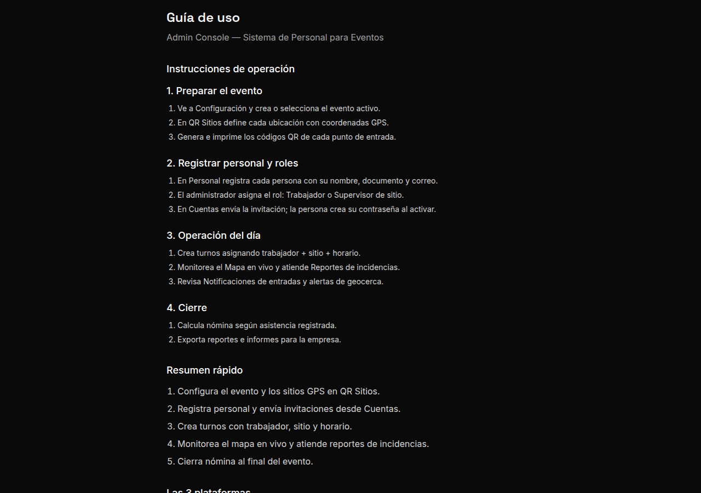
3. Activar cuenta (trabajador nuevo)
El trabajador del evento no tiene usuario fijo. El administrador lo registra e invita; la persona crea su propia contraseña.
Unirse con código
- Desde login → enlace Unirme con código de invitación.
- Ingresar correo (el que registró el admin) y código de un solo uso.
- Continuar para crear contraseña y completar perfil.
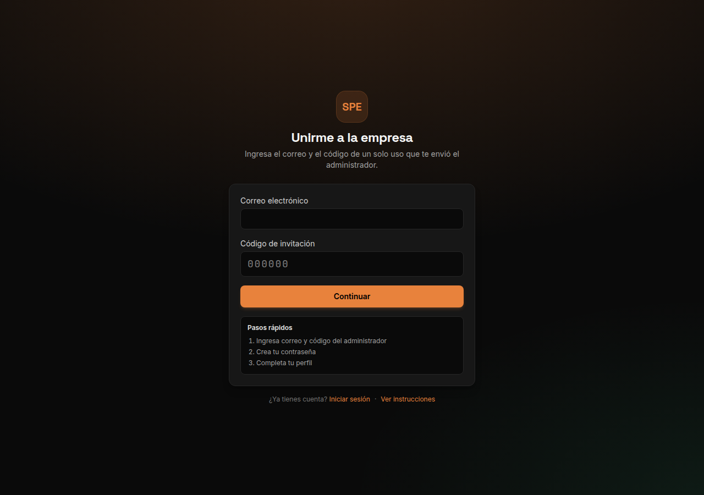
4. Panel Administrador — preparar el evento
Panel / Dashboard

Configuración
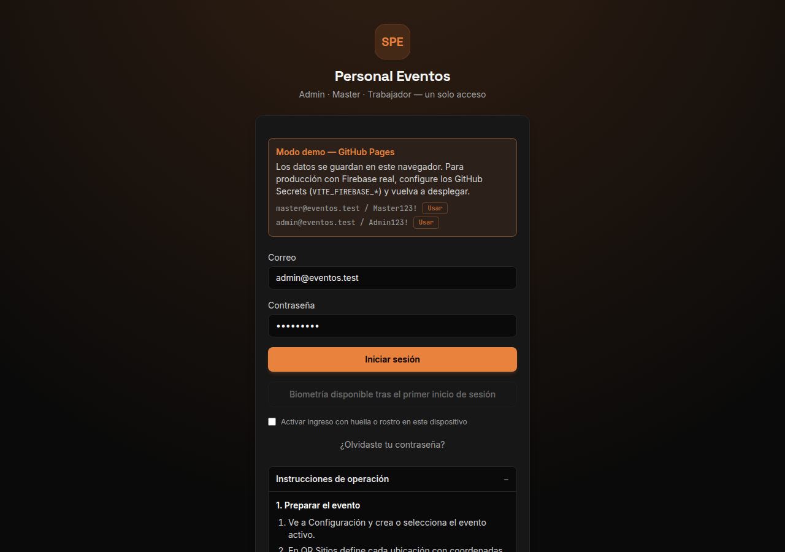
Personal
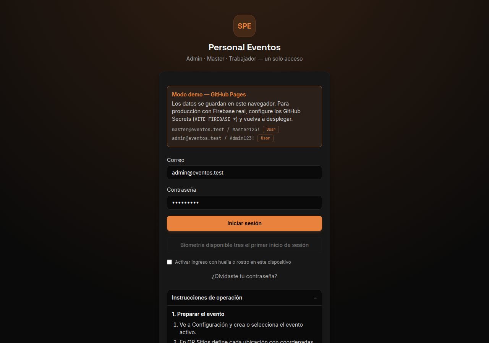
Cuentas e invitaciones
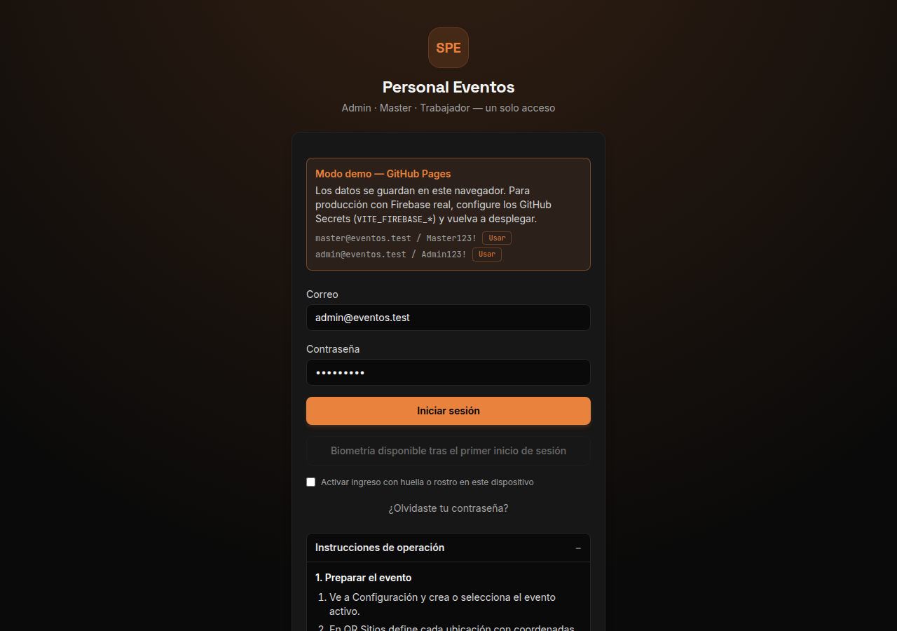
QR Sitios
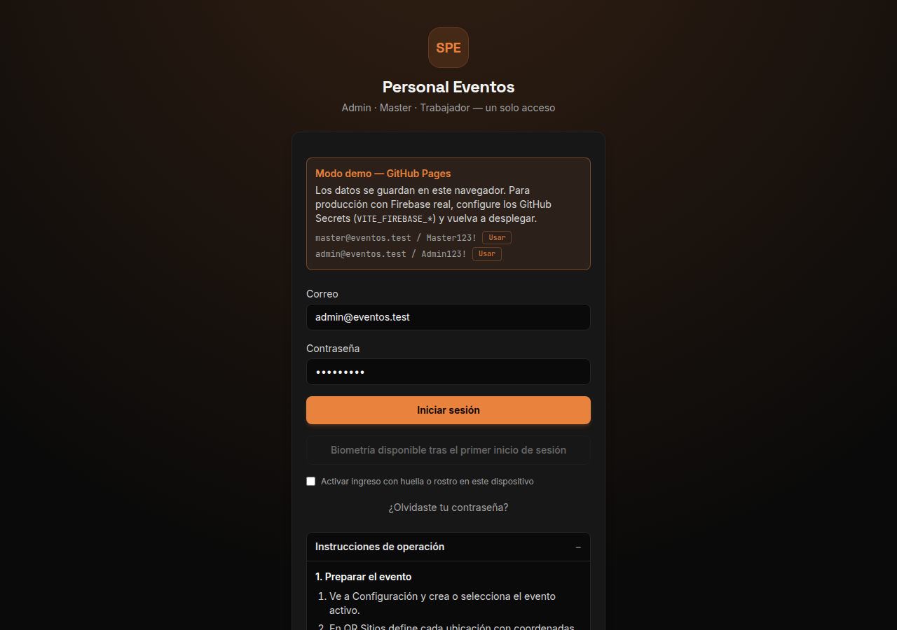
Turnos
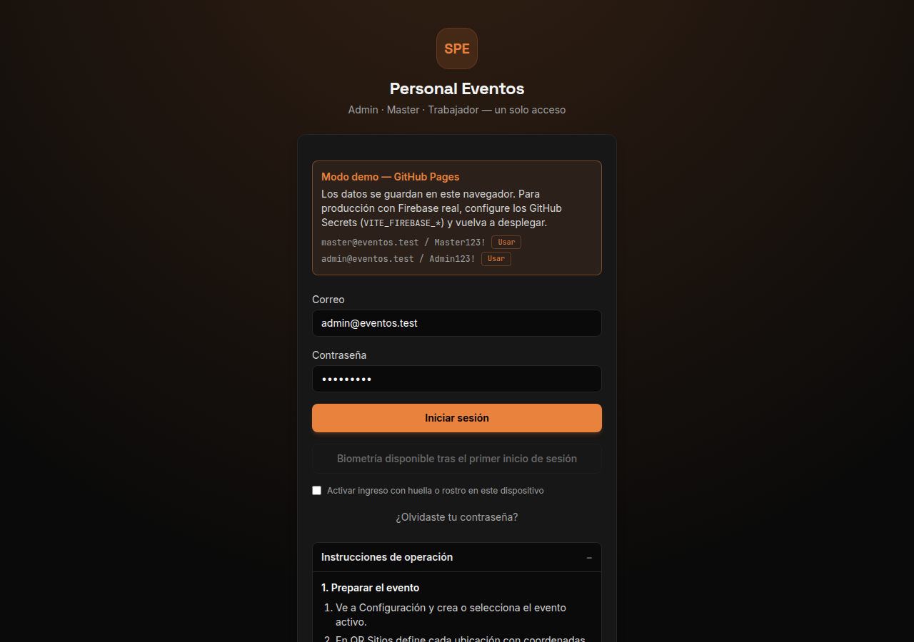
5. Operación durante el evento
Mapa en vivo

Reportes / incidencias
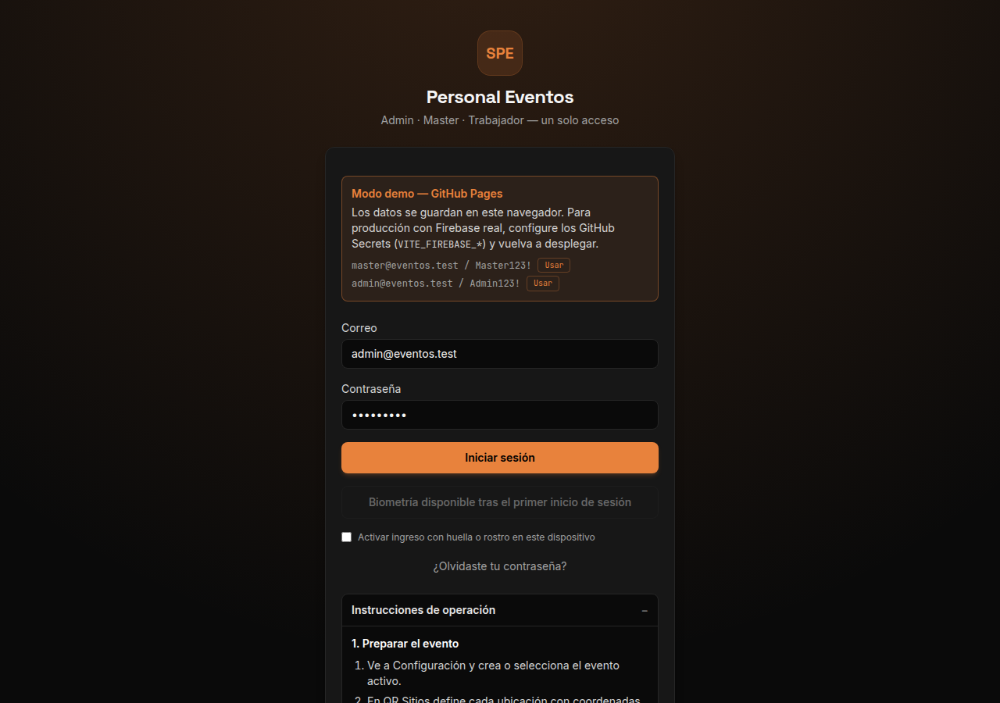
Nómina
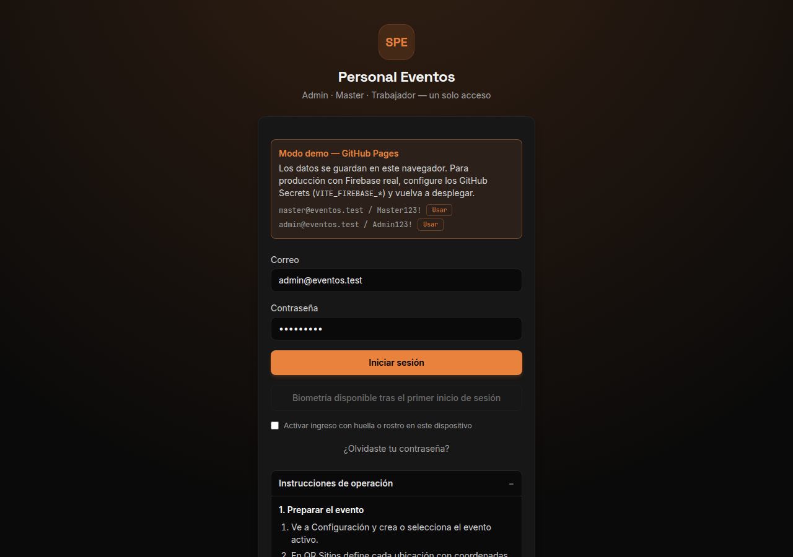
Notificaciones

Integraciones
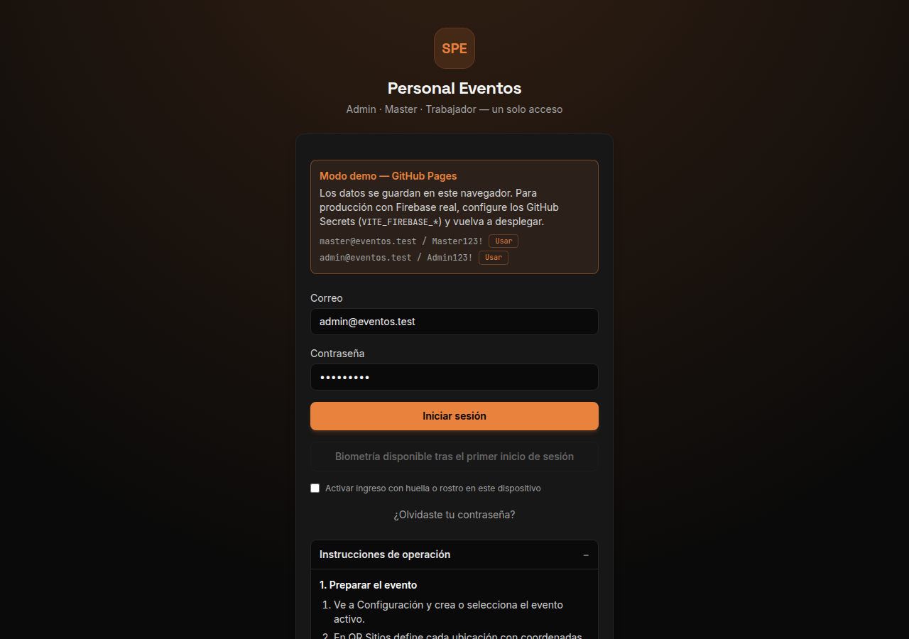
6. App Trabajador — en el evento
Vista móvil. Tras activar la cuenta, el trabajador usa estas pantallas en el sitio del evento.
| Pestaña | Función |
|---|---|
| Inicio | Resumen y próximo turno |
| Turnos | Ver turnos asignados; aceptar o rechazar |
| Escanear | Leer QR del sitio + validar GPS (marca entrada/salida) |
| Reportar | Enviar incidencia al supervisor |
Inicio
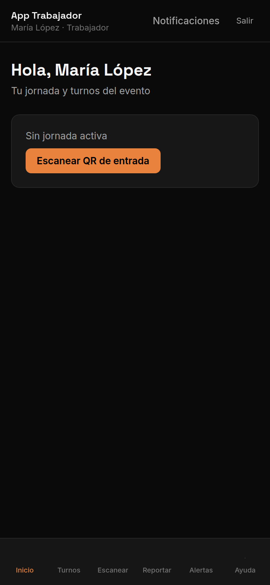
Turnos
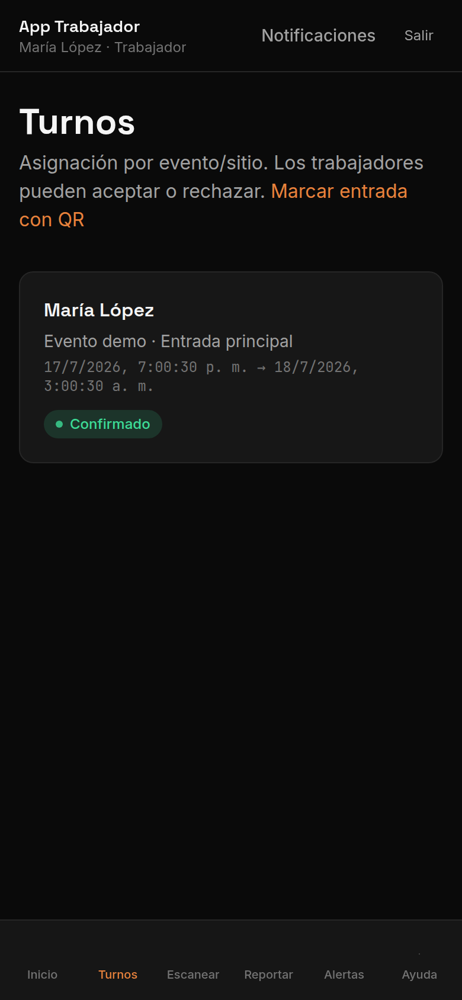
Escanear QR + GPS
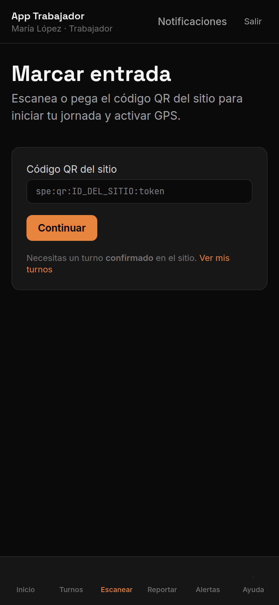
Reportar incidencia
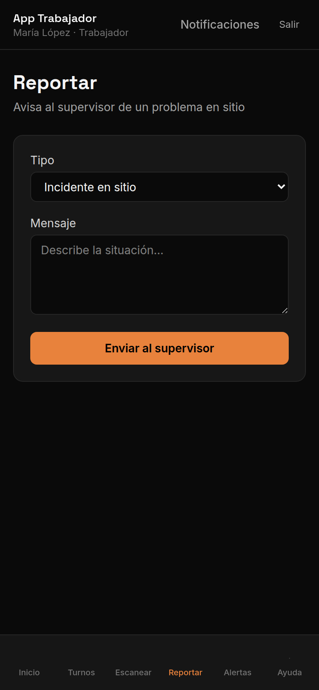
7. Panel Master — plataforma
Panel Master

Informes
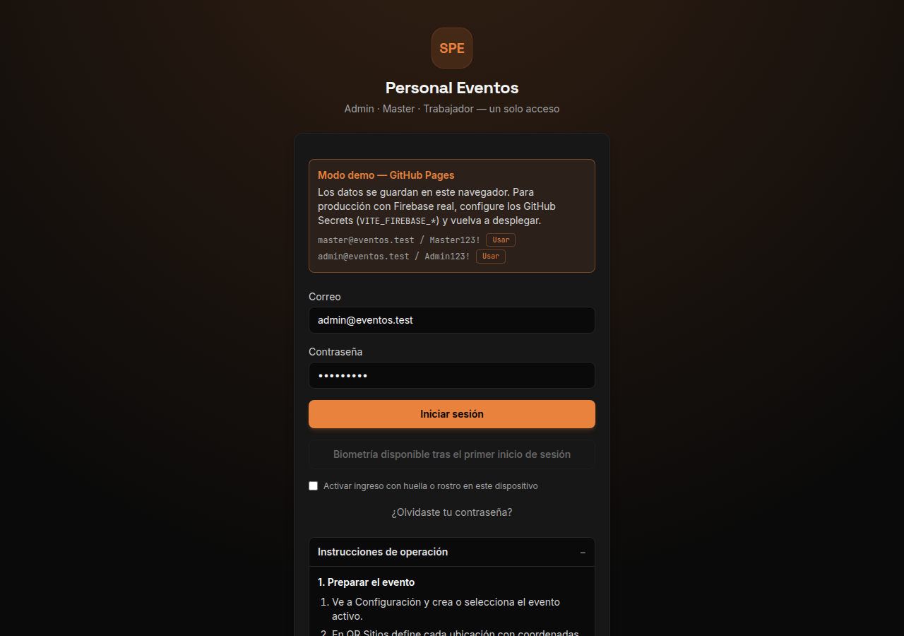
Auditoría

8. Flujo completo resumido
| Fase | Quién | Pasos |
|---|---|---|
| Preparación | Administrador | Configuración → Personal → Cuentas (invitar) → QR Sitios → Turnos |
| Activación | Trabajador | /unirse → código → contraseña → completar perfil |
| Evento | Trabajador | Aceptar turno → escanear QR en sitio → reportar si hay problema |
| Supervisión | Administrador | Mapa en vivo + Reportes + Notificaciones |
| Cierre | Administrador | Nómina → exportar |